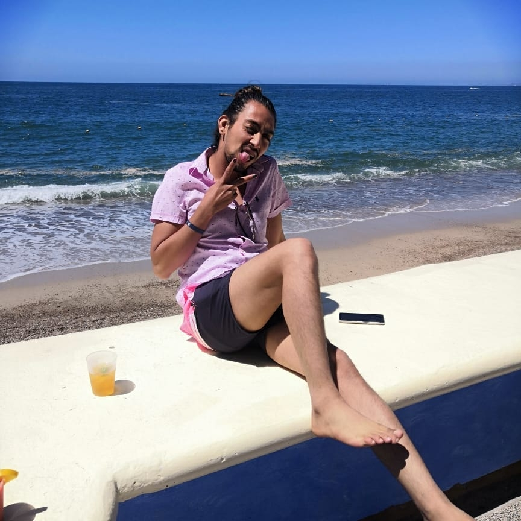

Alonso Gonzalez Lona
Alonso, que no se puede decir de el que no se sepa ya, es todo en personaje siempre viajando, de fiesta, dormido, oh simplemente haciendo amigos pero eso si siempre comiendo en todo momento, la verdad su vida es todo un carnaval jamás sabes que ara, es increíble convivir con el y siempre te hace reír con cualquier cosa y tiene excelentes historias para contar y es muy interesante, aunque es demasiado estresante discutir con el por que de alguna forma siempre se toma personal cualquier cosa y es difícil hablar en ese punto, pero en general es una buena persona y demasiado única.
Descripcion
Datos
Tio
Edad: 25 años;
Alias: Alonso;
Aficiones:
Dormir
Comer
Viajar